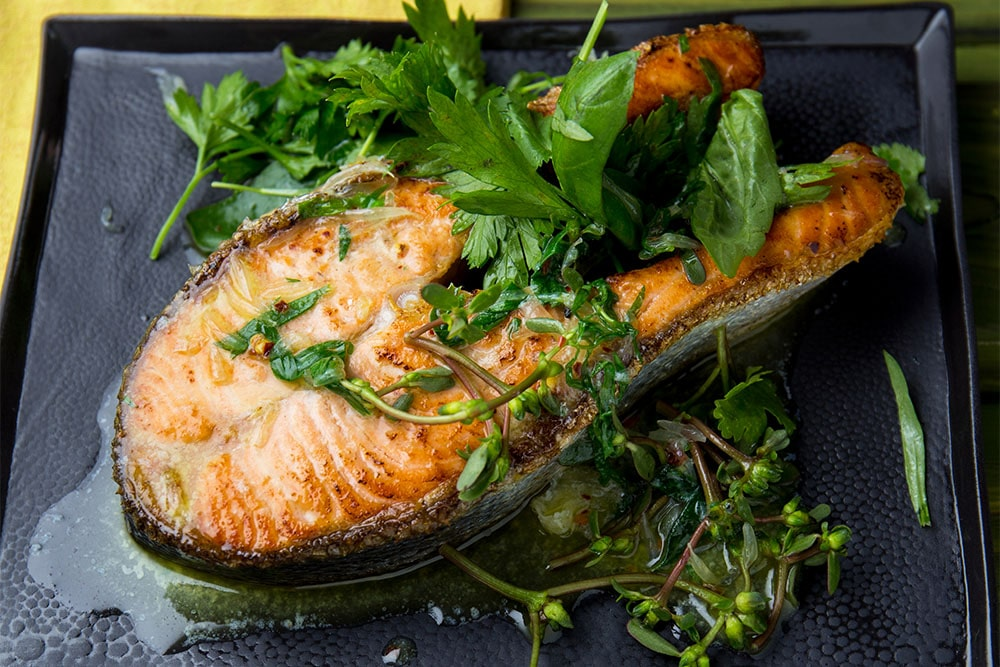
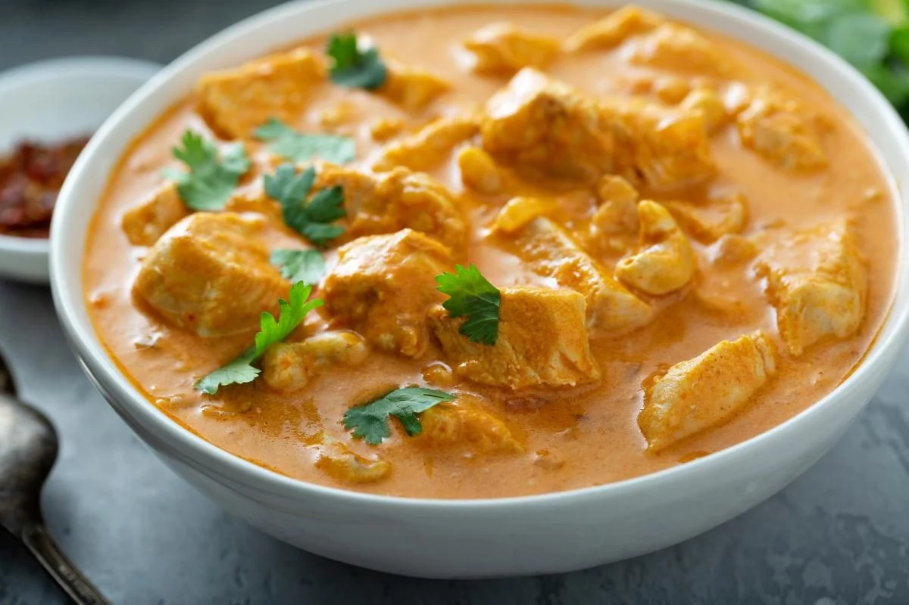

Другі страви
-
Стейк з лосося
Інгредієнти:
- Філе лосося - 2 шт.
- Олива - 2 ст. л.
- Сіль, перець - за смаком
Приготування:
- Розігрійте олію на сковороді.
- Посипте філе лосося сіллю та перцем з обох сторін.
- Положіть філе на сковороду і обсмажуйте з обох сторін по 3-4 хвилини.
- Подавайте з овочами та картоплею на гарнір.
-
Курка в вершковому соусі
Інгредієнти:
- Філе курки - 4 шт.
- Цибуля - 1 шт.
- Часник - 3 зубчики
- Сливки - 200 мл
- Сливи - 5 шт.
- Олива - 2 ст. л.
- Сіль, перець - за смаком
Приготування:
- Нарізати курячі філе на шматочки та підсмажити на олії до золотисто-коричневого кольору.
- Додати нарізану цибулю та часник та смажити декілька хвилин.
- Додати нарізані сливи та сливки та довести до кипіння.
- Зменшити вогонь та покрити кришкою.
- Готувати 20-25 хвилин, поки курка стане м'якою та соус не згустнеться.
- Додати сіль та перець за смаком.
- Подавати гарячим з рисом або картоплею на гарнір.